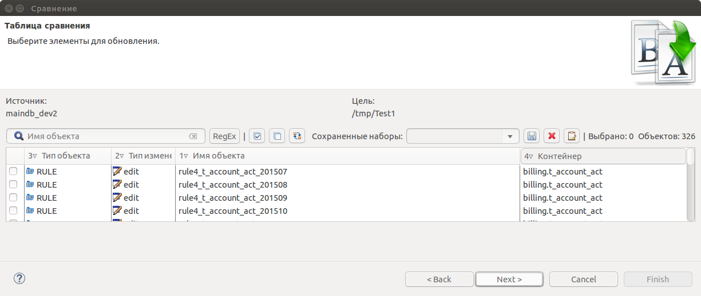
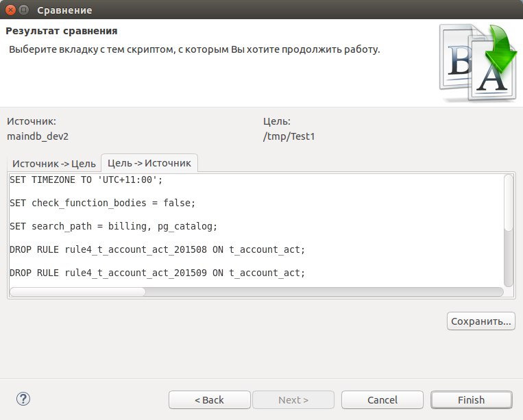

Открываем мастер сравнения баз данных: pgCodeKeeper -> diff databases или вызываем контекстное меню pgCodeKeeper проекта
и выбираем pgCodeKeeper -> Сравнить.... Выбираем исходную (источник) базу данных, которую нужно обновить и
целевую (цель) базу данных, на основании которой обновляем исходную базу данных. Выбираем дополнительные параметры:
кодировка и временная зона. Имеется возможность установить кодировку и временную зону как
для исходной, так и для целевой базы данных. Нажимаем кнопку Next и переходим к таблице сравнения.
Отмечаем необходимые изменения. Нажимаем кнопку Next и переходим к результату сравнения.
Примечание: панель инструментов работает аналогично панели инструментов редактора проектов pgCodeKeeper. 
Переключаясь между табами можно посмотреть сгенерированный скрипт наката для обновления базы данных в обе стороны. На вкладке Источник -> Цель показано направление выбранное пользователем, а на вкладке Цель -> Источник обратное направление. Пользователь может выбрать один из двух вариантов скрипта. 
При нажатии кнопки Finish открывается Редактор скрипта наката. Отобразиться тот скрипт, который был выбран пользователем на странице результатов сравнения.